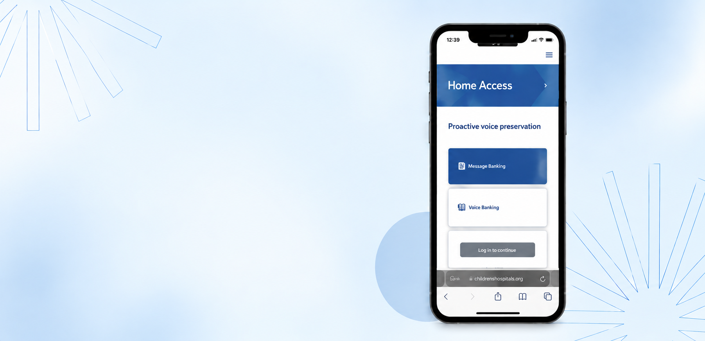

BOSTON CHILDREN’S HOSPITAL / HEALTHCARE UX
A clearer path to ALS care resources.
A mobile web concept for finding, organizing, and sharing clinical information.

- My role
- UX/UI design, research, and prototyping
- Focus
- Information architecture, resource organization, and accessibility
- Status
- Concept; clinical impact and accessibility conformance have not been demonstrated here
The task: move from a question to a useful resource
The concept addresses a practical workflow: a clinician needs to find relevant ALS information, keep it organized, and share it with a colleague. The design goal was to make that path easier to follow and reduce the effort of repeatedly locating information.
The current project materials describe the intended workflow and feature set. They do not document measured delays, a research sample, or clinical outcomes.
Organizing the experience around three tasks
01 / Find relevant information
A guided survey is proposed as a route to relevant resources. It offers more direction than an undifferentiated list, but introduces questions before the user reaches content. A next test should compare this approach with direct browsing.
02 / Save resources for later
Folders and bookmarking support repeated access. The concept includes creating, renaming, moving, sharing, and deleting folders. The design question is whether this level of organization helps clinicians retrieve information or adds unnecessary management work.
03 / Share a resource with a colleague
Sharing completes the proposed workflow. The final interaction, permissions, and delivery method need to be confirmed before presenting a production-ready handoff.
A proposed task walkthrough
This sequence describes the concept; it is not a tested interactive prototype.
- Find
Use the guided survey or browse available resource categories.
- Save
Bookmark a relevant resource and organize it in a folder.
- Share
Choose the information to pass to another clinician.
The overview image above is the available project visual. Detailed task screens and an interaction recording would provide stronger evidence of how this sequence works.
Accessibility as a requirement to verify
The concept proposes text-size and weight controls, color choices, and contrast adjustment. These preferences should complement a usable default experience.
A next review should check keyboard navigation, visible focus, semantic headings, screen-reader labels, contrast, and text reflow. The materials shown here do not establish that these checks have been completed.
Intended benefits and an evaluation plan
The intended benefits are easier resource discovery and less repeated searching. These remain design goals, rather than demonstrated improvements in clinical decisions.
- Findability: Ask clinicians to locate a specified resource; observe completion, time, and wrong turns.
- Retrieval: Ask them to return to a saved item and compare folders with a simpler saved list.
- Sharing: Check whether recipients and shared content are clear before the action is completed.
- Accessibility: Pair interface checks with testing by people who use assistive technology.